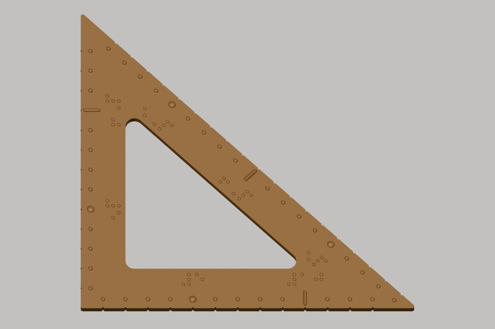
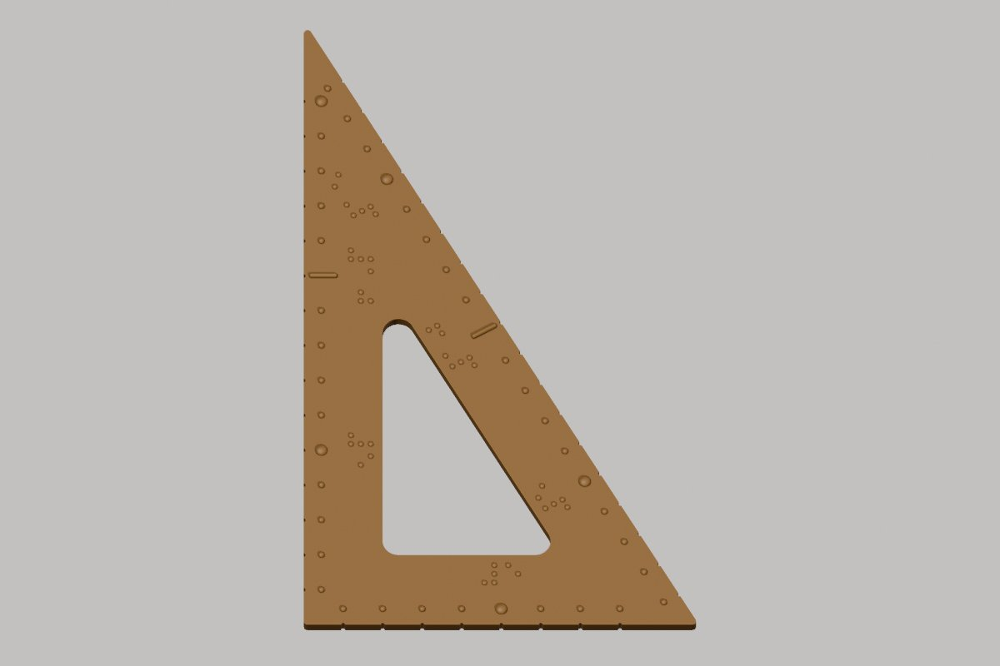

Görme engelli ve az gören öğrencilerin ölçüm ve çizim yapabilmesi, kesirleri dokunarak öğrenebilmesi için hazırladığımız cetvel, gönye, iletki ve kesir seti modelleri. STL dosyalarını indirip 3D yazıcıda ücretsiz olarak basabilirsiniz.
Geometri setindeki bütün parçalarda aynı işaretler kullanılır:

45-45-90 gönye. İki dik kenarı 15 cm, üç kenarında da santimetre ölçeği var.

30-60-90 gönye. Kenarları 10, 17,3 ve 20 cm, üç kenarında da santimetre ölçeği var.
1/1'den 1/12'ye kadar dokunsal kesir daireleri ve parçaların oturduğu tabak. Her parçada Braille kesir ve az gören öğrenciler için büyük punto "1/N" yazısı vardır.
Geometri seti ve kesir seti parçaları 220 × 220 mm tablaya (Creality Ender 3 S1) sığacak şekilde boyutlandırıldı. Hazır G-code dosyası Ender 3 S1 ve PLA için hazırlanmıştır; farklı bir yazıcıda STL dosyasını kendi dilimleyicinizde açın.
Az gören öğrenciler için iki renkli basabilirsiniz: dilimleyicide geometri setinde 3,0 mm'de, kesir parçalarında 4,0 mm'de, tabakta 5,4 mm'de duraklatıp filament değiştirin. Böylece kabartmalar zemin renginden ayrılır.
Modeller Blender ile parametrik olarak üretildi. Ölçüleri değiştirmek isterseniz generate_set.py ve generate_kesir.py betiklerini, ortak dokunsal.py kütüphanesiyle birlikte kullanabilirsiniz. Blender dosyaları: geometri seti, kesir seti.